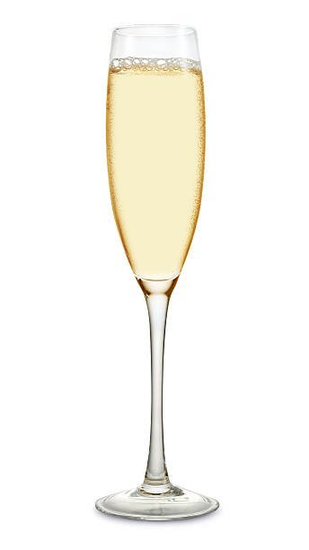
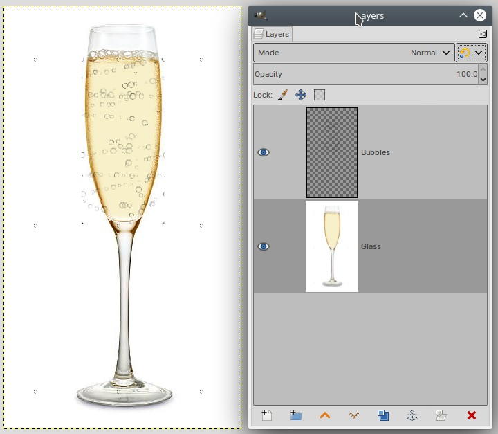
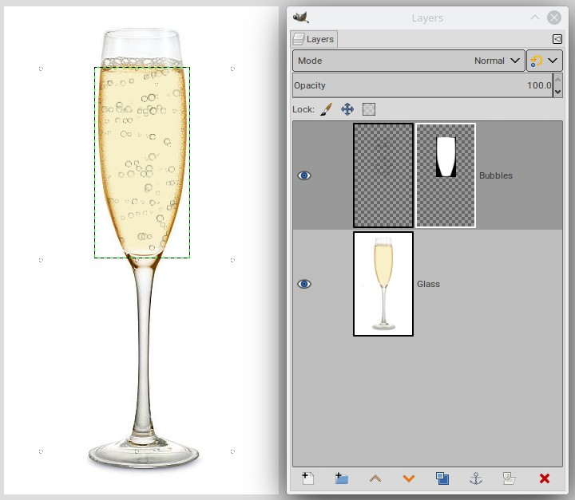
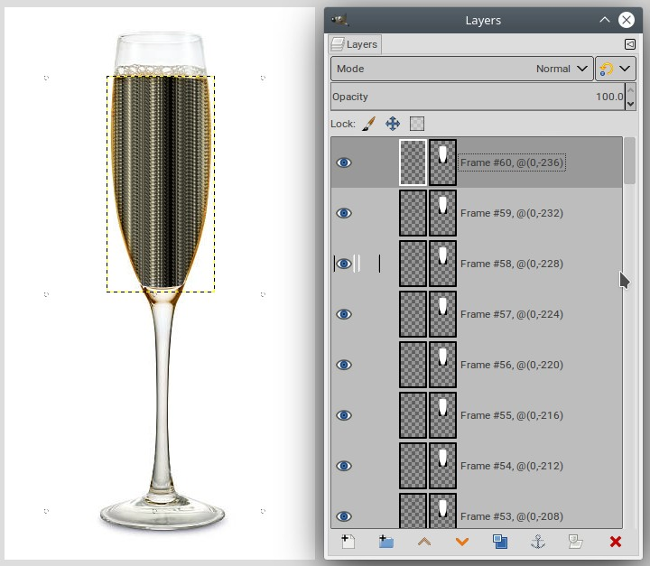
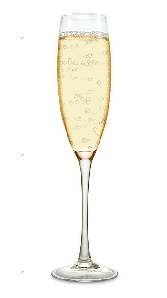
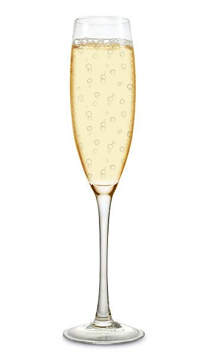

ofn-scroll-layer
Purpose
This script creates several copies of the active layer, offset by a constant amount horizontally and vertically. The layer contents are wrapped around so that the result can be used as a continuous animation.
Usage
The script is started by the Layer>Scroll layer menu.
Parameters
The parameters are divided in two groups, one for each of the horizontal and vertical scrolls.
- Step: The amount by which the layer is offset between each frame. This determines the total number of frames (see usage notes). Positive numbers go from left to right and from top to bottom, negative numbers are right to left and bottom to top. At least one of of these two must be different from 0.
- Tiles: The number of tiles the layer is made of,
1if the layer is not tiled. - Waves: The number of transverse oscillations added to the displacement. The higher numbers correspond to a faster wave. This applies to one period of the animation, which is just the tile dimension if the layer is tiled.
- Amplitude: The maximum amplitude of the oscillations produced above.
Usage notes
Creating an adequate layer
For a seamless animation, the layer used should itself be "seamless".
In Gimp 2.10 this is very easy to do:
- Create the layer with the required dimensions
- Open the Symmetry Painting dialog (
Windows>Dockable dialogs>Symmetry Painting)and set the symmetry toTilingand theInterval XandInterval Yvalues to the width and height of the layer. - Painting on the layer automatically makes it seamless.
- You can also use smaller
Intervalvalues (as long as they divide the layer dimensions), to generate a tiled layer that can significantly reduce the number of frames of the final animation.
In Gimp 2.8, you can get some help from my seamless-helper script.
Generating the copies
The script generates as many copies as necessary to make a full cycle for both horizontal and vertical movements.
- For a plain layer, the scroll span is the layer dimension and an animation cycle scrolls the layer by a multiple of its height and width.
- For a tiled layer, the scroll span is the tile dimension and an animation cycle scrolls the layer by a multiple of the height and width of the tile (layer dimension divided by the number of tiles)
- In the general case, for a direction, the number of copies is the Least Common Multiple of the step and the scroll span, divided by the step.
- When the step divides the span this is just
span / step. - When it does not the number can be significantly bigger,
for instance a step of
3on a span of200isLCM(200,3)/3 = 600/3 = 200(while a step of2would yield100and a step of4would yield50). - If the movement is both vertical and horizontal, the total number of copies is the LCM of the copies required for each direction.
There are many LCM calculators online, in practice typing LCM 120 300 in your favorite search engine will elicit a result.
Using a layer mask
If the layer has a layer mask, the mask is copied, but is not shifted. This allows the mask to be used as a viewport on the animated layer.
Example: adding bubbles
This example also uses my ofn-interleave-layers script, avaible from the same place as ofn-scroll-layer.
Starting with this image (found on the web), where I removed existing fixed bubbles and replaced them with plain color:

- Create a selection that encompasses the part of the glass where you want bubbles, and save it to a channel (
Select>Save to channel). ThenSelect>Noneto remove the selection (it is saved...) - Add a transparent layer that covers the glass. At that point it is best to give it dimensions that won't lead to an "LCM storm".
120x240fits nicely, and their LCM is small since120divides240. If a taller layer were necessary,120x300could have been decent (LCM=600). - Open the Symmetry painting option and set it to
Tiling,120by240 - Start the Brush tool, pick a bubble brush set the size (you can use adequate brush dynamics to randomize size, spacing, and opacity)
- Make a few brush swipes across the layer.

- Add a mask to the layer:
Layer>Mask>Add layer mask, and initialize the mask with the saved selection. The bubbles should only be visible within the glass.

Select the layer again, by clicking on its preview in the Layers list (otherwise the next step will apply to the mask and won't work).
We can now invoke
ofn-scroll-layeron the Bubbles layer. Let's use prudent values, like a step of -4 (negative because we want the bubbles to go up) that will yield 60 copies:

- Scroll to the bottom of the Layers list.
ofn-scroll-layerhas made the initial "Bubbles" layer invisible, but we also need to make theGlasslayer invisible for the next step:

Now use
ofn-interleave-layersfor the animation:Image>Interleave layers>Interleave single layer under stack (sprite mode)- Layer: pick the
Glasslayer - Reduce opacity a bit:
65%to70% - Keep mode to
Normal - Merge:
Yes
This generates a new image, which is our animation:

If you find that 60 frames is a bit much, you can set the Interval Y of the Symmetry Painting to 80, to obtain a tiled layer. Then in ofn-scroll-layer you set the count of Tiles to 3. This will yield 20 frames.
